More advanced Visual Studio features
It could take years to master all that Visual Studio has to offer. Here are some highlights you might find useful.
Themes
The Visual Studio IDE has light themes and dark themes with lots of variation in between. Try switching to a dark theme:
Select Tools, hover over Theme, and click Dark to apply the Dark theme.
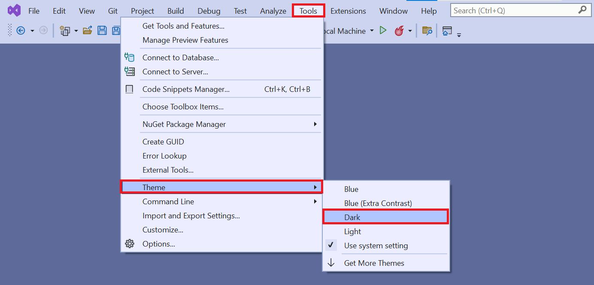An example of Visual Studio with the Dark theme:
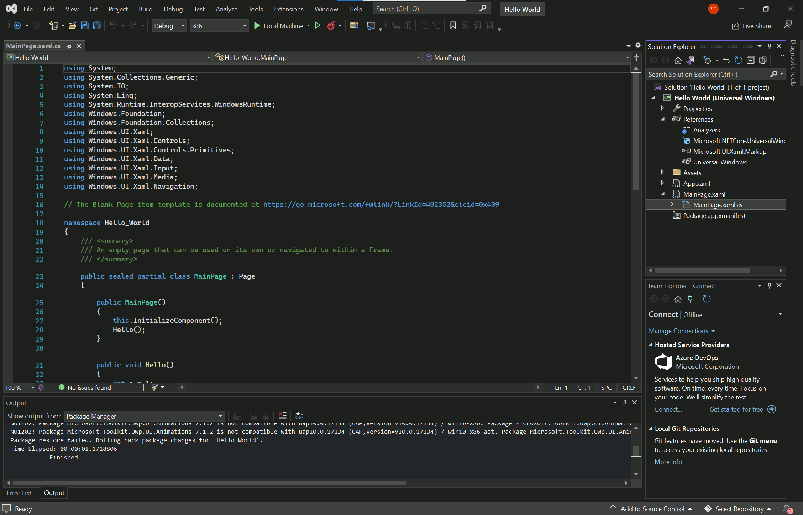Feel free to choose your preferred theme.
Refactoring
Visual Studio has powerful refactoring tools that apply changes to your source code in intelligent ways. For example, you can highlight a piece of code, use the refactoring tool to extract it, and then turn it into a method. The tool is also great for renaming variables.
Try it out in your project:
- Select the MainPage.xaml.cs file in Solution Explorer. The file opens.
- Hover over the method called
Hello()that's nested inside of theMainPage()method. Right-click the method and select Rename.
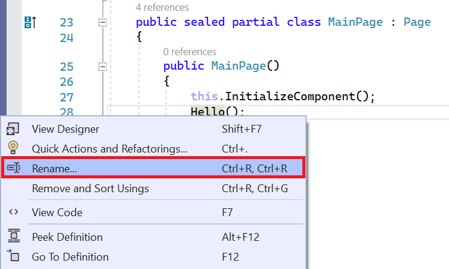
- Type a new name and click Apply. The name changes everywhere it occurs. 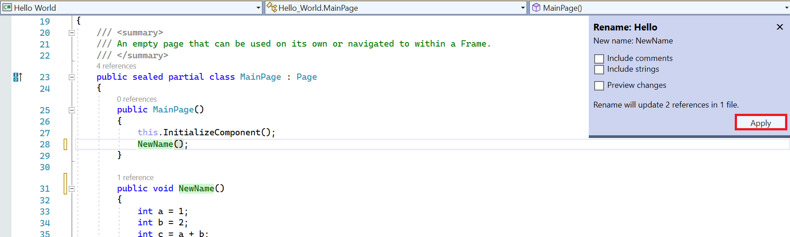

Code snippets
Code snippets are predefined pieces of code that Visual Studio can add into your project. They save you lot's of typing once you've gotten familiar with them.
Use a snippet to quickly insert a do/while loop:
- Select the MainPage.xaml.cs file in Solutions Explorer.
- Add a new line in the
MainPage()method. - Hold Ctrl, press K, and then press X to open the Insert Snippet window. 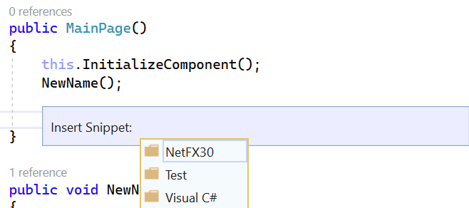
- Click Visual C# and select do from the list. Your
MainPage()method should look like this:
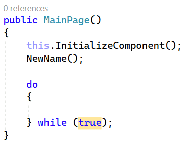
- Enter missing any information. The do loop requires a condition. The loop continues for as long as that condition is true.
GitHub
GitHub is a service and website used to store code, including projects created in Visual Studio. It offers several benefits:
- Security: Your code is stored remotely. Remote storage is great in case something happens to your computer.
- Source code management: GitHub uses Git. Git makes it easy to undo changes and try new ideas.
- Sharing: GitHub makes it easy to share projects, collaborate, and use code from other developers.
Download a project from GitHub directly in Visual Studio:
- Find the example project (Windows coloring book sample) in GitHub: 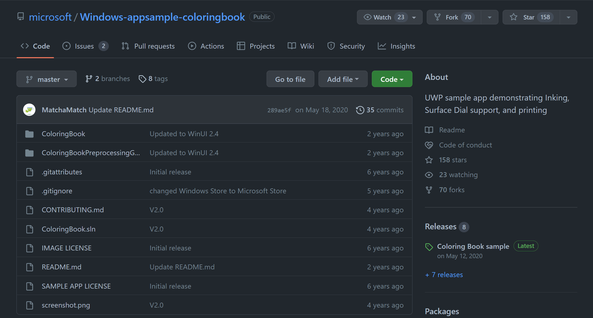
- Click the green Code button. The URL for the project displays. Click the clipboard icon to copy it. 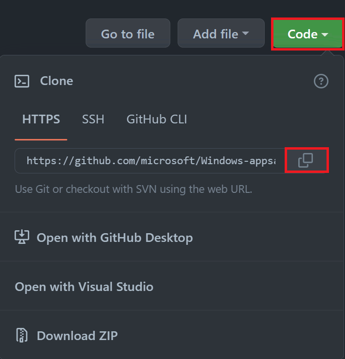
- Open Visual Studio. Click Git and select Clone Repository. 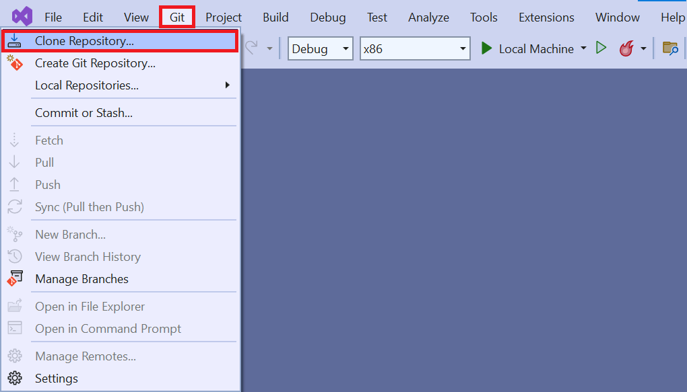
- Select the green triangle Run button.
The solution is cloned to your computer.
NOTE
When you first load a project you've cloned from GitHub, you might need to set the default project. Solutions can contain multiple projects. You might need to specify this particular project as the one Visual Studio should build and run.
You'll have to set that option manually. For this example, right-click ColoringBook (Universal Windows) in the Solution Explorer, and then select Set as Startup Project. Visual Studio now runs this project by default.

Visual Studio might ask you to download more components. After you confirm these downloads, the app begins building. A loading screen displays:
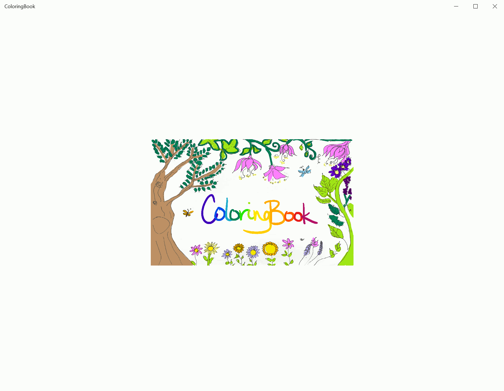After a few moments, a page selection screen displays:
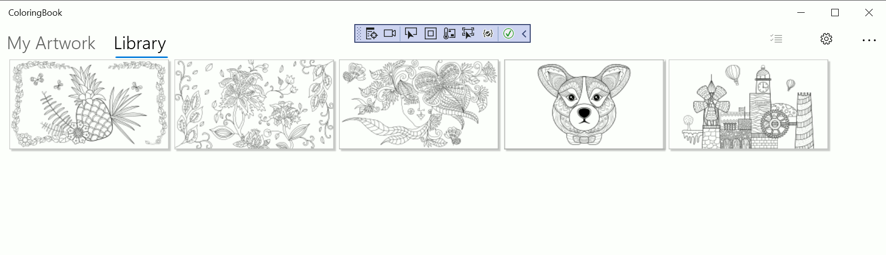ARM, x86, or x64
Visual Studio builds apps for different types of hardware:
- Advanced RISC Machine (ARM)-based systems.
- Computers running the 32-bit or 64-bit version of Windows.
Projects loaded from GitHub might provide the incorrect default value for system architecture. For example, it might default to ARM if you have an Intel computer. Check that the architecture listed next to the Run button matches your hardware, which is usually x86.
Other ways to use GitHub
You can download a project from GitHub as a zip file, unzip the project, and open it directly in Visual Studio. This approach is a good if you're not planning to submit changes to the project repository or share code with other developers.
Using Git on a daily basis
Every developer knows that tracking changes in projects can be difficult. What if you try out something, realize it was a mistake, and need to revert to a previous version? What if you're working with a friend and you both make changes to the same files? These issues are what Git is designed to address.